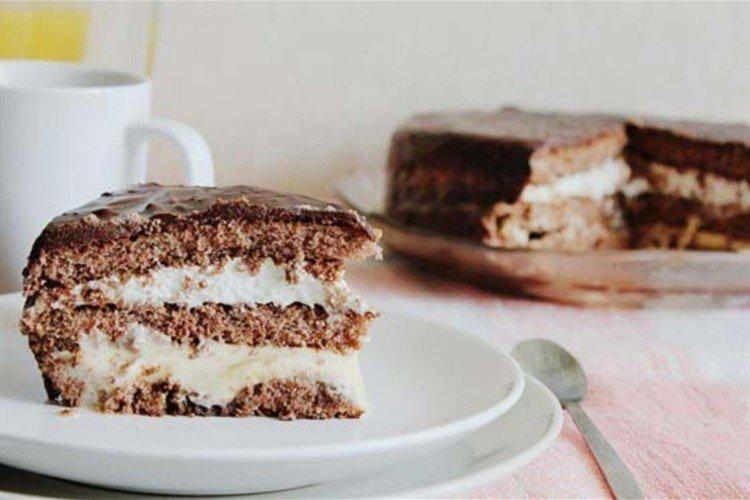
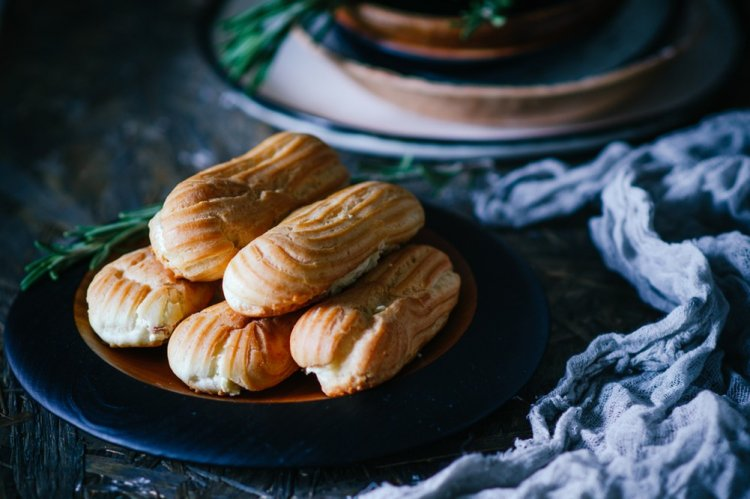
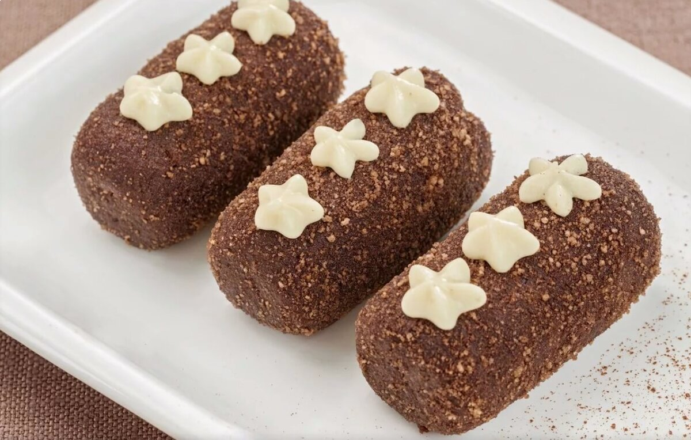

На данной странице представлены рецепты
На этой странице собрано большое количество десертов и выпечки. Простые и сложные, для новичков и опытных кулинаров - на любой вкус.
| Фото | Название | Ингредиенты | Способ приготовления |
|---|---|---|---|
|  | Шоколадно-творожный торт | Для бисквита: 200 мл теплого кефира, 2 яйца, по 1 стакану муки и сахара, 1 ч. л. разрыхлителя, 50 г какао, 40 мл растительного масла, щепотка соли. Для крема: 350 г мягкого творога, 1 пачка сметаны, 180 г сахара, ваниль. |
Яйца взбей миксером с сахаром и щепоткой соли, влей теплый кефир и рафинированное масло. Всыпь муку с разрыхлителем. Выпекай в духовке минут 40. Остывший бисквит разрежь на три тонких лепешки. Собери торт, перемазывая коржи кремом из указанных компонентов, хорошенько взбитых миксером. |
| Домашний торт «Осенняя соната» | Для коржей: 260 г мякоти запеченной тыквы, 2 яйца, 100 мл рафинированного растительного масла, 260 г муки, 1 стакан сахара, 1 пачка ванильного сахара, 15 г разрыхлителя, 2 ст. л. сока цитрусовых, по одной щепотке соли и молотой куркумы. Для крема: 1 пачка сливок для взбивания, 6 ст. л. сахарной пудры, несколько ложек любого фруктового или ягодного джема. |
Взбитую блендером мякоть запеченной в духовке тыквы смешай с куркумой, соком апельсина или мандарина. Переложи полученную массу во взбитые с сахаром яйца, влей растительное масло, добавь муку, разрыхлитель и хорошенько перемешай. Испеки отдельно два коржа, поделив объем теста пополам. Затем охлади и разрежь вдоль еще на две половинки каждый корж. Перемазывай каждый слой джемом и взбитыми в крутую пену сливками с сахарной пудрой. |
| Фото | Название | Ингредиенты | Способ приготовления |
|---|---|---|---|
|  | Эклеры | Для теста: 150 г муки, 100 г сливочного масла, 4 яйца, 250 мл воды, 1 ч.л. сахара, 0,5 ч.л. соли. Для крема: 650 мл молока, 2 яйца, 250 г сахара, 150 г муки, 1 щепотка ванилина, 50 г сливочного масла. |
Для крема взбей венчиком 150 мл молока, сахар, яйца, муку и ванилин. Отдельно вскипяти оставшееся молоко и влей в мучную смесь, постоянно помешивая. Провари крем до загустения около 10 минут на слабом огне, дай ему немного остыть, добавь мягкое сливочное масло и накрой пленкой. Для теста доведи воду с сахаром и маслом до кипения, помешивая. Постепенно добавь муку с солью, продолжая мешать. Дай тесту немного остыть, и поштучно добавь яйца, взбивая после каждого. С помощью кулинарного мешка выложи тесто на пергамент полосками. Выпекай эклеры 10 минут при 200 градусах, а потом еще 30 минут при 180. Дай им остыть в приоткрытой духовке, сделай снизу маленькие отверстия и наполни эклеры кремом с помощью того же кондитерского мешка. |
|  | Картошка | 3 яйца, 100 г сахара, 80 г муки, 20 г крахмала, 0,5 ч.л. ванильной эссенции, 130 г сливочного масла, 50 г сгущенки, 60 г сахарной пудры, 1 ст.л. какао. |
Нагрей яйца с сахаром на водяной бане примерно до 45 градусов и взбей до пены. Добавь крахмал с мукой, вылей массу на противень и выпекай 15 минут в духовке при 200 градусах. Дай бисквиту один день немного подсохнуть. Измельчи бисквит в блендере. Отдельно взбей сливочное масло, сахарную пудру, ваниль и сгущенку. Смешай с бисквитной крошкой, сформируй пирожные и обваляй в какао. |